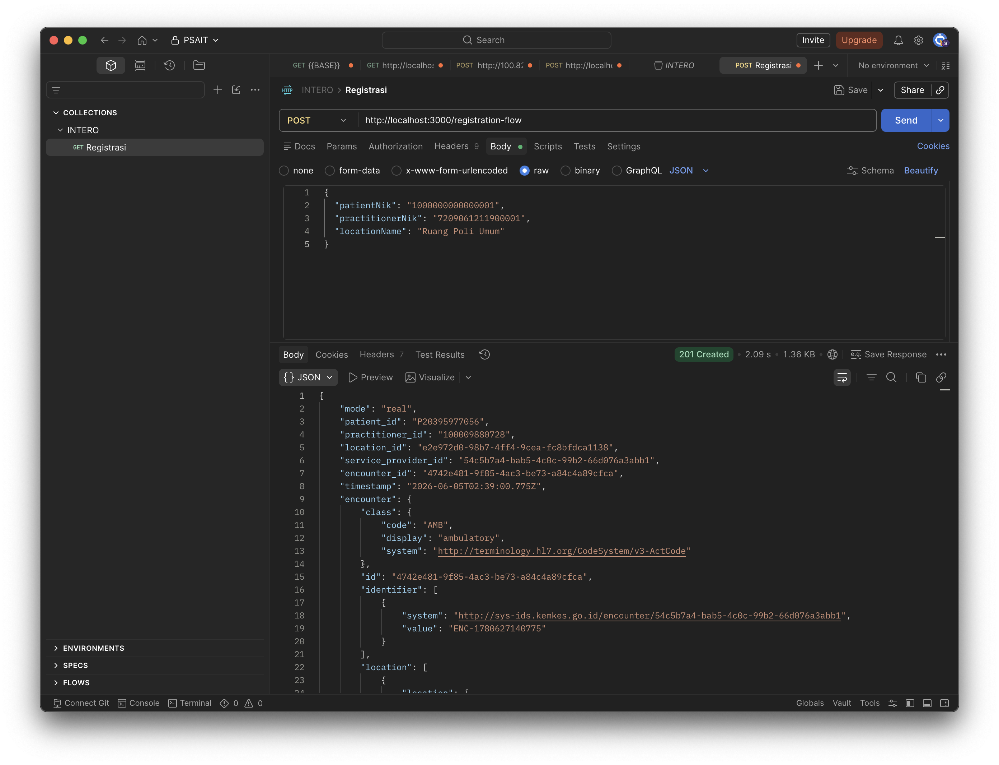

Simulasi Pendaftaran Kunjungan Pasien
Output yang Dibuktikan
Backend berhasil membuat resource Encounter dan menerima response 201 Created dari server SATUSEHAT.
Membangun backend sederhana untuk menjalankan alur pendaftaran pasien ke SATUSEHAT.
Menghubungkan aplikasi lokal ke API SATUSEHAT menggunakan token OAuth2.
Mengambil IHS Number pasien dan dokter berdasarkan NIK dummy yang tersedia.
Membuat Location dan Encounter dengan status kunjungan arrived.
Request dijalankan berurutan karena setiap langkah menghasilkan ID untuk langkah berikutnya.
OAuth2
Mengambil access token dari server SATUSEHAT.
Patient
Mencari IHS pasien dari NIK dummy.
Practitioner
Mencari ID dokter dari NIK sandbox valid.
Location
Membuat ruangan poli untuk lokasi kunjungan.
Encounter
Mendaftarkan kunjungan pasien ke SATUSEHAT.
Backend menyediakan endpoint yang mudah diuji dari Postman.
GET /auth/tokenaccess_tokenGET /master/patient/:nikpatient_idPOST /registration-flowencounter_idPayload Encounter mengikuti struktur FHIR R4 yang dibutuhkan untuk kunjungan rawat jalan.
status: arrived menunjukkan pasien sudah tiba.
class: AMB digunakan untuk ambulatory atau rawat jalan.
Encounter menghubungkan Patient, Practitioner, Location, dan Organization.
Waktu request dikirim dengan format ISO 8601 UTC.
Beberapa data pada slide tugas perlu disesuaikan agar valid di SATUSEHAT Sandbox.
NIK 1000000000000002 tidak ditemukan, sehingga digunakan NIK sandbox valid 7209061211900001.
Encounter memakai Organization UUID dari credential resmi: 54c5b7a4-bab5-4c0c-99b2-66d076a3abb1.
Field Location.identifier tidak dikirim karena ditolak oleh rule sandbox.
Access token di-cache agar tidak terkena rate limit autentikasi.
Backend menampilkan error dasar agar proses debugging lebih jelas.
Token tidak valid atau sudah kedaluwarsa.
Pasien atau dokter tidak ditemukan berdasarkan NIK.
Payload tidak sesuai validasi SATUSEHAT, misalnya Organization ID salah.
Source code dipisah agar konfigurasi, server, dan client SATUSEHAT mudah dicek.
src/config.js
Membaca `.env`, base URL SATUSEHAT, credential, Organization ID, dan mode real/mock.
src/server.js
Menyediakan endpoint lokal untuk Postman dan mengembalikan error yang mudah dibaca.
src/satusehatClient.js
Menjalankan request token, Patient, Practitioner, Location, dan Encounter.
Backend menjalankan semua langkah tugas secara berurutan sampai mendapatkan Encounter ID.
Access token diambil dari OAuth2 dan di-cache agar tidak terkena rate limit.
ID dari Patient, Practitioner, dan Location dipakai untuk membentuk Encounter.
Response akhir menampilkan encounter_id sebagai bukti pendaftaran berhasil.
POST Encounter berhasil dibuat dengan response 201 Created.

Bagian yang perlu terlihat saat screenshot manual
- Status response:
201 Created patient_idpractitioner_idlocation_idservice_provider_idencounter_id
Luaran tugas sudah disiapkan dalam folder proyek dan repository GitHub.
src/server.js, src/satusehatClient.js, dan konfigurasi Node.js.
Postman collection untuk request backend lokal.
Bukti response SATUSEHAT 201 Created yang menampilkan encounter_id.